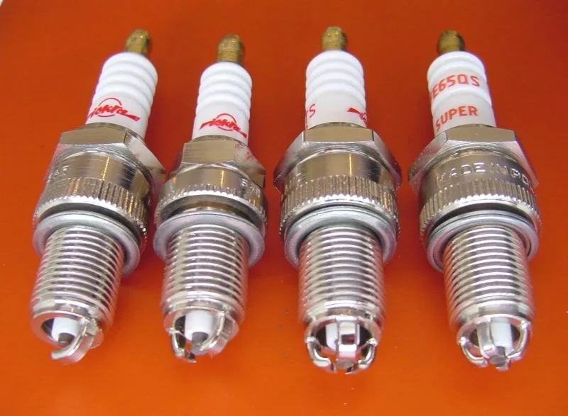
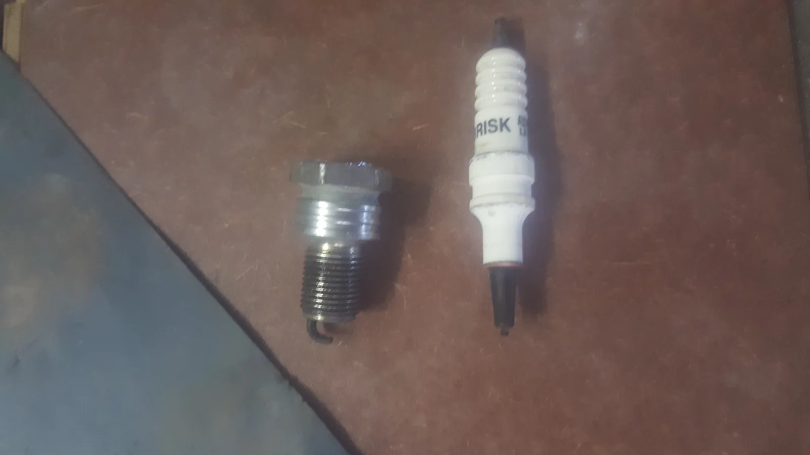
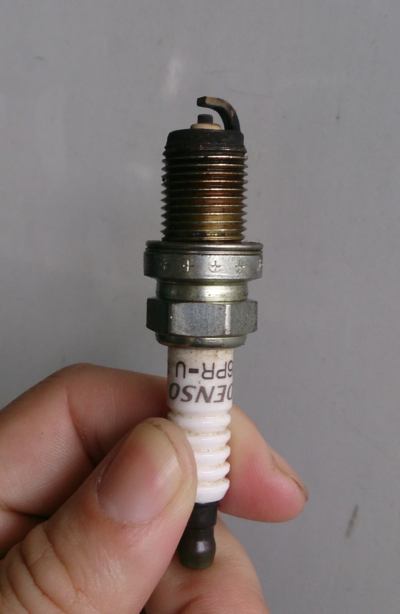
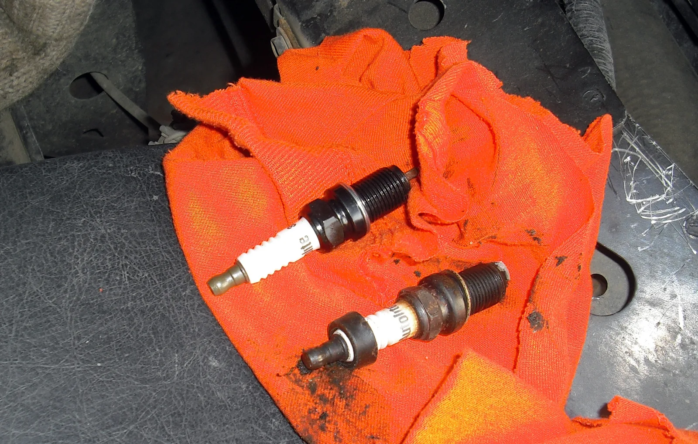
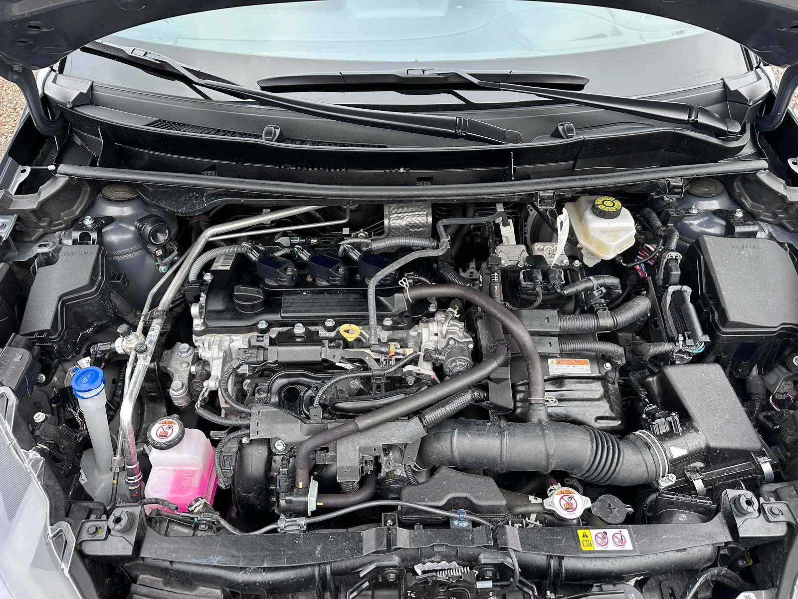

▲ 이리듐 점화플러그. 소재별로 교체 주기가 최대 5배까지 차이 난다 ⓒ Wikimedia Commons
"점화플러그 교체할 때 됐어요"라는 정비사의 말에 선뜻 동의하기 어려운 이유가 있다. 점화플러그는 소재에 따라 교체 주기가 최대 5배까지 차이 나기 때문에, 내 차에 어떤 플러그가 들어있는지 모르면 적정 시점을 판단하기 어렵다.
1. 니켈 3만km, 백금 8만km, 이리듐 16만km

▲ 서로 다른 점화플러그 비교. 전극 소재가 다르면 수명도 크게 달라진다 ⓒ Wikimedia Commons (CC BY-SA 3.0)
| 소재 | 권장 교체 주기 |
|---|---|
| 니켈 합금(일반) | 약 3만km |
| 백금 | 약 8만km |
| 이리듐 | 약 16만km |
점화플러그는 전극 소재에 따라 니켈 합금(일반), 백금, 이리듐 세 가지로 크게 나뉜다. 대부분의 점화플러그는 구리 코어에 각 금속으로 전극을 씌운 구조이며, 이 표면 금속이 무엇이냐에 따라 마모 속도가 달라진다. 니켈 합금 전극은 상대적으로 무르기 때문에 3만km 안팎에서 마모가 진행되지만, 백금과 이리듐은 훨씬 단단하고 융점이 높아 전극 손실 속도가 느리다. 그 결과 이리듐 플러그는 니켈 대비 약 5배 긴 수명을 갖는다. 다만 이리듐 플러그의 권장 교체 주기는 자료마다 8만~16만km로 다소 폭이 있는데, 이는 파인와이어(fine-wire) 방식의 장수명 제품인지, 저출력 GDI 엔진처럼 카본 침착이 빠른 환경인지에 따라 실제 교체 시점이 앞당겨질 수 있기 때문이다. GDI 엔진 차량은 이리듐 플러그를 쓰더라도 7만~8만km 구간에서 조기 점검을 권장하는 정비 업계 의견도 있다.
2. 왜 이리듐이 성능도 더 좋은가
이리듐 플러그가 오래 가는 이유는 단순히 마모가 느려서만은 아니다. 이리듐은 전극을 가늘게 만들 수 있어 스파크 발생 지점이 더 정밀해지고, 이는 착화 효율 향상으로 이어진다. 또한 오염(카본 침착)에도 상대적으로 강해 장기간 안정적인 점화 성능을 유지한다. 이런 이유로 최근 출시되는 국산차 대부분은 백금 또는 이리듐 플러그를 기본으로 채택하고 있다.
3. 운전 습관이 수명을 바꾼다

▲ 점화플러그 교체 작업 장면. 실제 수명은 부품 스펙표의 숫자와 다를 수 있다 ⓒ Wikimedia Commons
제조사가 제시하는 교체 주기는 표준 조건을 가정한 수치다. 실제로는 잦은 공회전, 단거리 반복 주행, 급가속 위주의 운전 습관이 카본 침착과 전극 마모를 앞당길 수 있다. 반대로 고속도로 위주로 꾸준히 주행하는 습관은 오히려 플러그 상태를 양호하게 유지하는 데 도움이 된다는 것이 정비 업계의 공통된 의견이다.
4. 교체 시점을 알리는 신호

▲ 실제 차량에서 분리한 점화플러그. 전극이 검게 오염되고 끝이 뭉개져 있으면 교체 시점이 지났다는 신호다 ⓒ Wikimedia Commons

▲ 엔진룸 내부. 미스파이어나 연비 저하가 느껴진다면 점화플러그 상태부터 확인해볼 만하다 ⓒ Wikimedia Commons (CC BY 4.0)
점화플러그 수명이 다하면 시동이 평소보다 늦게 걸리거나, 공회전 시 진동이 커지고, 가속 시 힘이 빠지는 듯한 느낌(미스파이어)이 나타날 수 있다. 연비가 눈에 띄게 떨어지는 것도 흔한 신호다. 이런 증상이 나타났다면 정확한 교체 주기표를 확인하기 전이라도 점검을 받아보는 것이 좋다.
5. 정리
체크포인트
- 내 차의 점화플러그가 니켈·백금·이리듐 중 무엇인지 먼저 확인하자.
- 교체 주기는 각각 3만·8만·16만km로 크게 차이 난다.
- 이리듐이 수명과 성능 모두에서 가장 우수하다는 평가다.
- 공회전·단거리 위주 운전은 실제 수명을 단축시킬 수 있다.